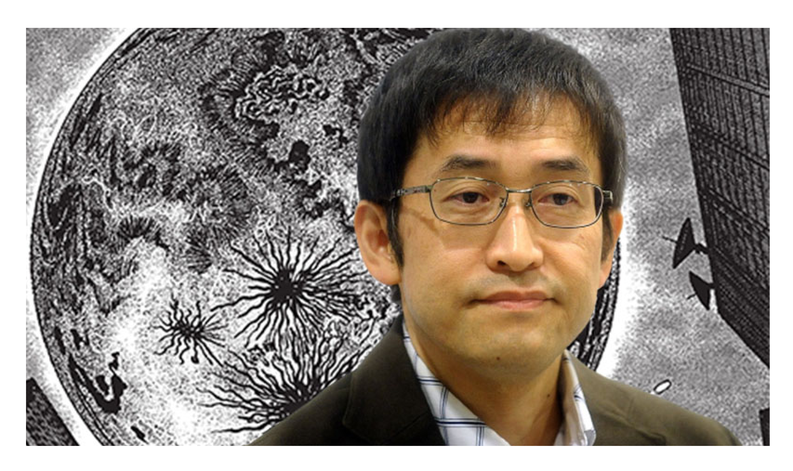

伊藤 潤二
Ito Junji

Junji Ito is a Japanese horror manga artist. Some of his most notable works
include Tomie,
a series chronicling an immortal girl who drives her
stricken admirers to madness;
Uzumaki, a three-volume series about
a town obsessed with spirals;
and Gyo, a two-volume story in which
fish are controlled by a strain of sentient bacteria called "the death stench."
His other works include The Junji Ito Horror Comic Collection, a collection
of his many short stories,
and Junji Ito's Cat Diary: Yon & Mu, a self-parody
about him and his wife living in a house with two cats.
Ito's work has
developed a substantial cult following, with some deeming him a significant figure in recent horror iconography.

Notable Works
- Hanging Blimp
- The Enigma of Amigara Fault
- The Long Dream
- The Thing That Drifted Ashore
- Greased
- Fashion Model
- Slug Girl
- Army of One
- Dissection Girl
- Honoured Ancestors
Sources:
https://japanobjects.com/features/junji-ito
https://images.squarespace-cdn.com/content/v1/58fd82dbbf629ab224f81b68/1578634858027-OFOI7OGC3HTAB60L27UV/Hanging-Blimp.jpg?format=750w
https://images.squarespace-cdn.com/content/v1/58fd82dbbf629ab224f81b68/1578634883330-7X9SI1QBAZCGXJHQ1LH2/image-asset.jpeg?fo rmat=750w
https://images.squarespace-cdn.com/content/v1/58fd82dbbf629ab224f81b68/1578634898089-HX8TD6T7JMDCY6WAQFDT/The-Long-Dream.jpg?format=750w
https://images.squarespace-cdn.com/content/v1/58fd82dbbf629ab224f81b68/1578634914077-0OBBP2NGZ9W2N8V0S5TR/Thing-that-Drifted-Ashore.jpg?format=750w
https://images.squarespace-cdn.com/content/v1/58fd82dbbf629ab224f81b68/1578634933419-6JLR9OFYVD01I0PBGJ6O/Greased.jpg?format=750w
https://images.squarespace-cdn.com/content/v1/58fd82dbbf629ab224f81b68/1578634948250-UG85JJYW6Z7PCPJFSWQY/Fashion-Model.jpg?format=750w
https://images.squarespace-cdn.com/content/v1/58fd82dbbf629ab224f81b68/1578634963867-EOUZBN5BEXPITQNP48A4/Slug-Girl.jpg?format=750w
https://images.squarespace-cdn.com/content/v1/58fd82dbbf629ab224f81b68/1578634996942-K3OBRYQWLVYM4AXKCR55/Army-of-One.jpg?format=750w
https://images.squarespace-cdn.com/content/v1/58fd82dbbf629ab224f81b68/1578635018032-TEQHCL7QS9FWSF3FLWGR/Dissection-Girl.jpg?format=750w
https://images.squarespace-cdn.com/content/v1/58fd82dbbf629ab224f81b68/1578635037055-12L056P21UL4I592OZUF/Honoured-Ancestors.jpg?format=750w
https://nawalakarsa.id/wp-content/uploads/2021/07/ito1.jpg
https://cdn130.picsart.com/288238916003211.png
https://static.wikia.nocookie.net/junjiitomanga/images/9/91/Img_uzumaki_kirie_goshima_01.png/revision/latest?cb=20210616023903
https://i.pinimg.com/originals/48/46/e1/4846e16b8e29b4346dc9bd5cb0762d1c.png
https://64.media.tumblr.com/1c9896f3456e11a7464dd7efca9113f8/tumblr_p7o6y44GfY1srwzzao1_540.pnj
https://en.wikipedia.org/wiki/Junji_Ito